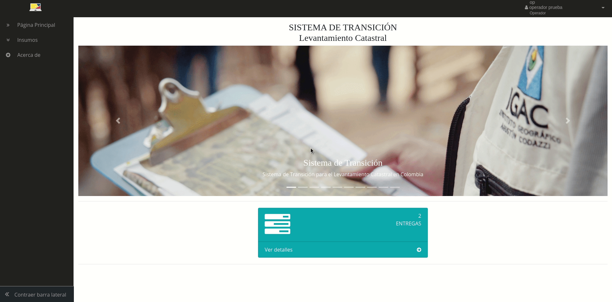
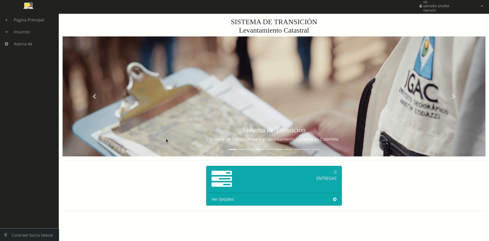

Documentación Sistema de Transición
Contenido:
Manual de usuario
Documentación técnica
Documentación Sistema de Transición
Docs
»
ROL: OPERADOR
View page source
ROL: OPERADOR
¶
Gestión de Insumos
¶
Descargas pendientes
¶

Descarga de reporte
¶
Descargas realizadas
¶
